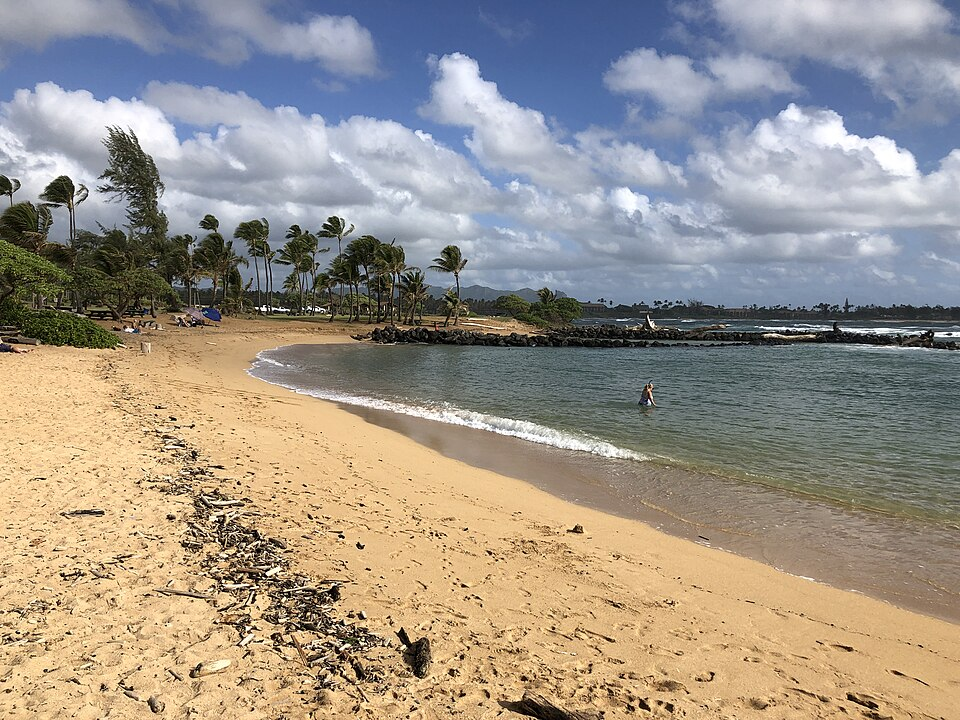

Lydgate Beach Park
Place: Lydgate Beach Park, Wailua, Kauaʻi
Type: Beach park / cultural landscape / historic preservation
Story it tells: A popular family beach named for Reverend John M. Lydgate, whose efforts helped preserve ancient Hawaiian sacred sites while laying the foundation for one of Kauaʻi's most beloved public parks.

Lydgate Beach Park occupies a stretch of coastline just south of the mouth of the Wailua River, within one of the most historically significant landscapes on Kauaʻi. Today the park is best known for its protected swimming lagoons, expansive playground, campsites, and walking paths. Its origins lie in the efforts of one remarkable individual whose work helped preserve an important piece of Hawaiian history.
The park is named for Reverend John Mortimer Lydgate (1854–1922), a Congregational minister, land surveyor, historian, businessman, and civic leader. Although born in Ontario, Canada, Lydgate grew up in Hawaiʻi after immigrating with his family as a child. Following studies at the University of Toronto and Yale Divinity School, he briefly accepted a pastorate in Washington before returning to Hawaiʻi in 1896. A brief visit to Kauaʻi convinced him to remain on the island for the rest of his life.
Lydgate quickly became one of Kauaʻi's most influential citizens. Fluent in both Hawaiian and English, he preached at churches across the island while simultaneously working as a professional surveyor. His knowledge of Kauaʻi's rugged interior helped him map routes that later became the famous Powerline Trail, and his botanical work led to the discovery and documentation of several rare native Hawaiian plants, including the endangered Cyanea lydgatei, which now bears his name.
During surveys in the early twentieth century, Lydgate documented the deteriorating remains of Hikinaakalā Heiau, the adjacent Hauola Place of Refuge, and nearby petroglyphs. At the time, plantation workers were dismantling portions of the ancient stone structures to reuse the lava rocks for other construction projects. Rather than staging public protests, Lydgate relied on his expertise as a surveyor to map the exact boundaries of the archaeological sites and petition the territorial government for their protection.
His efforts succeeded. In 1921, the territorial government agreed to preserve approximately thirty-five acres surrounding the Wailua River mouth as public land. Prince Kūhiō supported the proposal, lending political weight to the preservation effort during a period when sugar plantations dominated much of Kauaʻi's economy. Reverend Lydgate passed away the following year, and the newly established park was later renamed in his honor.
Although the protected landscape dates to the early 1920s, many of the park's best-known features arrived decades later. In the late 1950s, local resident Albert S. Morgan Sr. proposed constructing lava-rock breakwaters that would shield swimmers from the powerful surf. Inspired by protected coastal pools he had seen in Italy, Morgan envisioned safe swimming areas for families and children. Completed in 1964, the enclosed lagoons, known as Morgan's Ponds allows visitors to snorkel and swim near year-round behind the protective rock walls.
The park continued to evolve following Hurricane Iniki in 1992. More than 7,000 community volunteers joined together to build the massive Kamalani Playground by hand, creating one of Hawaiʻi's largest wooden playgrounds. Walking paths, campsites, picnic areas, and other facilities followed, turning the historic preserve into one of Kauaʻi's premier public recreation areas while leaving its archaeological sites protected within the broader Wailua Complex of Heiaus National Historic Landmark.
Today Lydgate Beach Park beautifully illustrates how recreation and preservation coexist. Families gather inside the calm lagoons, children explore the playground, and visitors walk only a short distance from places that once served the aliʻi of ancient Kauaʻi. More than a century after Reverend Lydgate insisted that these sacred places deserved protection, his vision continues to shape a cherished public space.